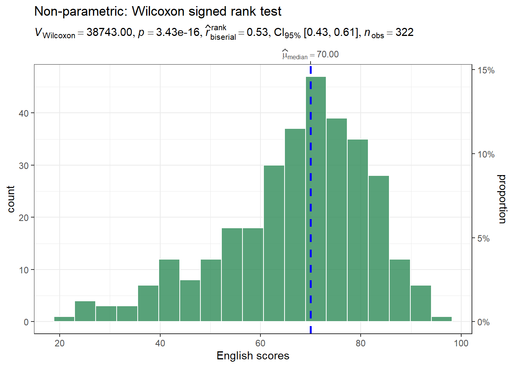

Show the code
pacman::p_load(ggstatsplot, tidyverse, nortest, ggdist)Andy Tai
May 3, 2026
May 3, 2026
This hands-on exercise focuses on:
exam_data.Rows: 322
Columns: 7
$ ID <chr> "Student321", "Student305", "Student289", "Student227", "Stude…
$ CLASS <chr> "3I", "3I", "3H", "3F", "3I", "3I", "3I", "3I", "3I", "3H", "3…
$ GENDER <chr> "Male", "Female", "Male", "Male", "Male", "Female", "Male", "M…
$ RACE <chr> "Malay", "Malay", "Chinese", "Chinese", "Malay", "Malay", "Chi…
$ ENGLISH <dbl> 21, 24, 26, 27, 27, 31, 31, 31, 33, 34, 34, 36, 36, 36, 37, 38…
$ MATHS <dbl> 9, 22, 16, 77, 11, 16, 21, 18, 19, 49, 39, 35, 23, 36, 49, 30,…
$ SCIENCE <dbl> 15, 16, 16, 31, 25, 16, 25, 27, 15, 37, 42, 22, 32, 36, 35, 45…| Test | What it Measures | Function |
|---|---|---|
| One-sample | Is this sample’s mean/median different from a known value? | gghistostats() |
| Two-sample | Are these two groups different from each other? | ggbetweenstats() |
| ANOVA | Are any of these groups different from each other? | ggbetweenstats() |
| Correlation | Is there a linear relationship between two continuous variables? | ggscatterstats() |
| Association | Is there a dependency between two categorical variables? | ggbarstats() |
| Type Argument | Test Used | Nature | When to Use |
|---|---|---|---|
type = "parametric" |
One-sample t-test | Parametric | When data follows normal distribution — tests against mean |
type = "nonparametric" |
One-sample Wilcoxon signed rank test | Non-parametric | When data does not follow normal distribution — tests against median |
type = "robust" |
One-sample robust t-test | Robust | When data has outliers — uses trimmed mean |
type = "bayes" |
Bayes Factor test | Bayesian | When you want to quantify evidence in favour of null or alternative hypothesis |
\(H_0\): \(\mu = 60\) (English scores mean is equal to 60)
\(H_1\): \(\mu \neq 60\) (English scores mean is not equal to 60)
\(H_0\): \(\mu = 60\) (English scores mean is equal to 60)
\(H_1\): \(\mu \neq 60\) (English scores mean is not equal to 60)

\(H_0\): \(\mu = 60\) (English scores mean is equal to 60)
\(H_1\): \(\mu \neq 60\) (English scores mean is not equal to 60)
A Bayes factor is the ratio of the likelihood of one particular hypothesis to the likelihood of another. It can be interpreted as a measure of the strength of evidence in favor of one theory among two competing theories.
That’s because the Bayes factor gives us a way to evaluate the data in favor of a null hypothesis, and to use external information to do so. It tells us what the weight of the evidence is in favor of a given hypothesis.
When we are comparing two hypotheses: H1 (the alternate hypothesis) and H0 (the null hypothesis), the Bayes Factor is often written as B10, i.e., \[ B_{10} = \frac{P(Data | H_1)}{P(Data | H_0)} \]
The Schwarz criterion is one of the easiest ways to calculate rough approximation of the Bayes Factor.
| If \(B_{10}\) is… | Then you have… |
|---|---|
| \(> 100\) | Extreme evidence for \(H_1\) |
| \(30 - 100\) | Very strong evidence for \(H_1\) |
| \(10 - 30\) | Strong evidence for \(H_1\) |
| \(3 - 10\) | Moderate evidence for \(H_1\) |
| \(1 - 3\) | Anecdotal evidence for \(H_1\) |
| \(1\) | No evidence |
| \(1/3 - 1\) | Anecdotal evidence for \(H_0\) |
| \(1/3 - 1/10\) | Moderate evidence for \(H_0\) |
| \(1/10 - 1/30\) | Strong evidence for \(H_0\) |
| \(1/30 - 1/100\) | Very strong evidence for \(H_0\) |
| \(< 1/100\) | Extreme evidence for \(H_0\) |
\(H_0\): \(\mu = 60\)
\(H_1\): \(\mu \neq 60\)
\[B_{10} = \frac{P(Data | H_1)}{P(Data | H_0)}\]
| Type Argument | Test Used | Nature |
|---|---|---|
type = "parametric" |
Welch’s t-test | Parametric |
type = "nonparametric" or type = "np" |
Wilcoxon rank-sum test (Mann-Whitney) | Non-parametric |
type = "robust" |
Yuen’s trimmed means t-test | Robust |
type = "bayes" |
Bayesian t-test | Bayesian |
\(H_0\): \(\mu_{Female} = \mu_{Male}\) (Mean Math scores of Female and Male are equal)
\(H_1\): \(\mu_{Female} \neq \mu_{Male}\) (Mean Math scores of Female and Male are not equal)
\(H_0\): \(\mu_{Female} = \mu_{Male}\) (Mean Math scores of Female and Male are equal)
\(H_1\): \(\mu_{Female} \neq \mu_{Male}\) (Mean Math scores of Female and Male are not equal)
\(H_0\): \(\mu_{Female} = \mu_{Male}\) (Mean Math scores of Female and Male are equal)
\(H_1\): \(\mu_{Female} \neq \mu_{Male}\) (Mean Math scores of Female and Male are not equal)
\(H_0\): \(\mu_{Female} = \mu_{Male}\)
\(H_1\): \(\mu_{Female} \neq \mu_{Male}\)
\[B_{10} = \frac{P(Data | H_1)}{P(Data | H_0)}\]
\(H_0\): \(\mu_{Chinese} = \mu_{Indian} = \mu_{Malay} = \mu_{Others}\) (Mean English scores of all races are equal)
\(H_1\): \(\mu\) (Not all mean English scores are equal)
ggscatterstats() doesn’t have a direct color argument for the points. Use point.args instead to pass colour settings to the underlying geom_point()\(H_0\): \(\rho = 0\) (There is no correlation between Math and English scores)
\(H_1\): \(\rho \neq 0\) (There is a significant correlation between Math and English scores)
\(H_0\): MATHS_bins and GENDER are independent
\(H_1\): MATHS_bins and GENDER are not independent
cut.ToyotaCorolla.csv)## transform features
car_resale <- car_resale %>%
mutate(
FuelType = as.factor(FuelType),
MetColor = as.factor(MetColor),
Automatic = as.factor(Automatic),
Doors = as.factor(Doors)
)
## build model
model <- lm(Price ~ Age +
KM +
FuelType +
HP +
MetColor +
Automatic +
CC +
Doors +
Weight,
data = car_resale)# Check for Multicollinearity
Low Correlation
Term VIF VIF 95% CI adj. VIF Tolerance Tolerance 95% CI
Age 1.94 [ 1.81, 2.10] 1.39 0.51 [0.48, 0.55]
KM 2.01 [ 1.87, 2.18] 1.42 0.50 [0.46, 0.54]
MetColor 1.02 [ 1.00, 1.23] 1.01 0.98 [0.81, 1.00]
Automatic 1.09 [ 1.05, 1.18] 1.05 0.91 [0.85, 0.95]
Doors 1.32 [ 1.24, 1.41] 1.05 0.76 [0.71, 0.80]
Weight 3.55 [ 3.25, 3.88] 1.88 0.28 [0.26, 0.31]
Moderate Correlation
Term VIF VIF 95% CI adj. VIF Tolerance Tolerance 95% CI
HP 6.19 [ 5.64, 6.80] 2.49 0.16 [0.15, 0.18]
CC 8.66 [ 7.87, 9.54] 2.94 0.12 [0.10, 0.13]
High Correlation
Term VIF VIF 95% CI adj. VIF Tolerance Tolerance 95% CI
FuelType 16.38 [14.83, 18.09] 2.01 0.06 [0.06, 0.07]In the code chunk, check_heteroscedasticity() of performance package.
Heteroscedasticity refers to a situation where the variance of the errors (or residuals) in the linear regression model is not constant across different levels of the predictor variable(s).
In the code below, plot() of see package and parameters() of parameters package are used to visualise the parameters of a regression model.
In the code below, ggcoefstats() of ggstatsplot package to visualise the parameters of a regression model.
only.significant = TRUE shows labels only for variables with p-value < 0.05, reducing clutter significantly!
Alternatively, we can replace only.significant = TRUEwith stats.labels = FALSE. This removes the cluttered statistical annotation boxes and just shows the coefficient dots and confidence interval lines cleanly.
Removing non-significant variables can improve the colour contrast of the labels that would otherwise be scaled according to the significance level.